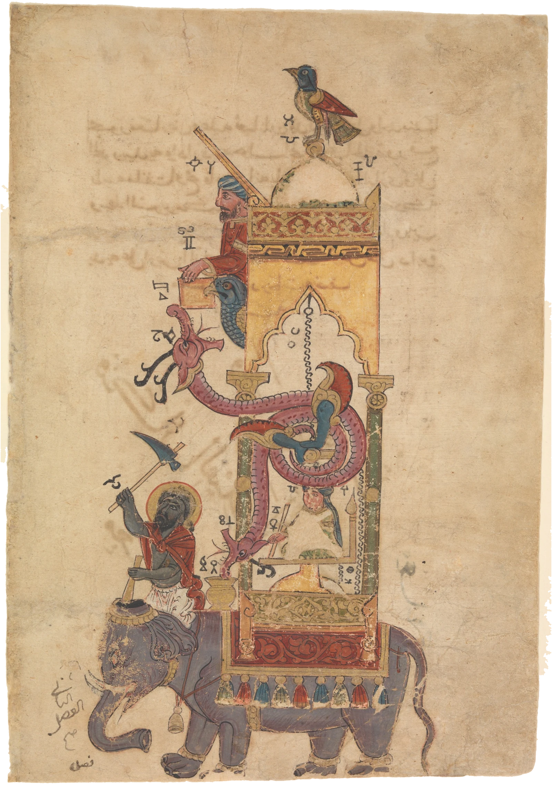

One sinking of the float

Time left
The machine works by hand too: tip the serpent, turn the bird, tap the vase.
In 1206 Badi' al-Zaman al-Jazari, engineer to the Artuqid princes of Diyarbakır, finished a book of the machines he had built, with drawings so that anyone patient enough could make them again. The elephant clock is the grandest. Inside the elephant a copper bowl with a hole in it floats on water and takes half an hour to fill and sink. As it sinks it turns a scribe on the elephant's back, whose pen moves slowly along a scale of seven and a half degrees.
When the bowl is down, it pulls a release in the castle. A ball rolls out of a falcon's beak into a serpent's mouth; the serpent bows under its weight to a vase on the elephant's shoulder, and as it bows its chain lifts the bowl out of the water and empties it. The ball runs down into the elephant, tips a spoon that makes the driver strike with his axe and then his mallet, and falls on a cymbal. The scribe turns back. The bird on the dome has already sung. This page was painted in 1315, probably in Syria or Iraq.
Closes in
Running against the hour: its scribe turns with each half hour of the day, as the original did.